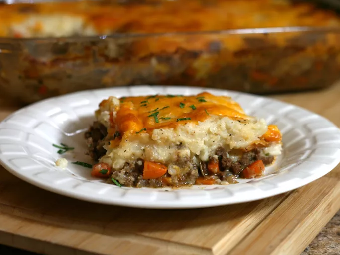

Cottage Pie
Image

Description
Cottage pie is an English casserole that’s traditionally made with minced meat (usually ground beef), gravy, vegetables, and mashed potatoes.
Ingredients
- 1 pound lean ground beef
- 1 onion, diced
- 3 carrots, diced
- 2 tablespoons all-purpose flour
- 1 tablespoon Italian seasoning
- ½ teaspoon ground cinnamon (Optional)
- 2 tablespoons chopped fresh parsley
- 1 ½ cups beef broth
- 1 tablespoon tomato paste
- salt and pepper to taste
- 4 potatoes, peeled and diced
- 1 cup milk
- ¼ cup butter, softened
- ¼ pound shredded Cheddar cheese
Steps
Here's a very brief overview of what you can expect when you make homemade cottage pie:
- Heat a large skillet over medium-high heat. Cook and stir ground beef in the hot skillet until browned and crumbly, 5 to 7 minutes. Add onion and carrot; cook and stir until onion has softened, about 5 minutes. Mix in flour, Italian seasoning, and cinnamon. Stir in parsley.
- Combine beef broth and tomato paste together in a jug; add to beef mixture. Season with salt and pepper; lower heat and simmer for 15 minutes, stirring occasionally, until slightly thickened.
- Preheat the oven to 400 degrees F (200 degrees C).
- Meanwhile, place diced potatoes in a medium saucepan; cover with water and place over high heat. Bring to a boil and simmer until potatoes are tender, about 15 minutes; drain. Mash potatoes until smooth, then add milk and butter; whip until fluffy. Season with salt and pepper.
- Spoon ground beef mixture into a 9x13-inch baking dish; spread mashed potatoes on top and sprinkle with grated Cheddar cheese.
- Bake in preheated oven until top is browned and cheese is bubbly, about 25 minutes.
Back to Home
Home